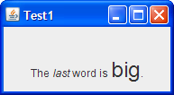

Questions
Question 1: On what thread should GUIs be created, to guarantee thread safety?
Answer 1: The event-dispatching thread.Question 2: Why should you be careful to minimize the time spent in event-handler code?
Answer 2: Painting code also executes in the event-dispatching thread. Therefore, event-handling code should execute quickly so that the program's GUI stays responsive. If an event takes too long to execute, the GUI will freeze — that is, it won't repaint or respond to mouse clicks.Question 3: What is the purpose of the
setLabelFormethod?
Answer 3: ThesetLabelFormethod provides a hint to assistive technologies, such as screen readers, that the label describes a particular component.Question 4: What is the content pane?
Answer 4: The content pane is the main container inJApplet,JDialog, andJFrameobjects.Question 5: Describe the three code segments that must be implemented for an event handler.
Answer 5:
- In the declaration for the event handler class, one line of code specifies that the class either implements a listener interface or extends a class that implements a listener interface. For example:
public class MyClass implements ActionListener {- Another line of code registers an instance of the event handler class as a listener on one or more components. For example:
someComponent.addActionListener(instanceOfMyClass);- The event handler class has code that implements the methods in the listener interface. For example:
public void actionPerformed(ActionEvent e) { ...//code that reacts to the action... }Question 6: Which text component is best suited for controlling the format of a single line of user-entered text?
Answer 6:JFormattedTextFieldQuestion 7: What is lazy image loading and why would you use it?
Answer 7: With lazy image loading you only load images as they are needed. By loading images as needed, you reduce the application's initialization time; however, the downside is that the user may notice a delay as an image is loaded.
Exercises
Question 1: Write the code that creates a label displaying the following text, with the italics and font size as shown in this screenshot:
Answer 1: Here's the code that sets the label text:For the full code, seeprivate static String labelText = "<html>The <em>last</em%gt; word is <font size=+2>big</font>.</html>";Test1 .
Question 2: Convert the
LunarPhasesexample to use radio buttons instead of a combo box.
Answer 2: SeeLunarPhasesRB.Question 3: Add a Show Dialog check box to the
VoteDialogexample so that the dialogs are shown only if this check box is selected.
Answer 3: